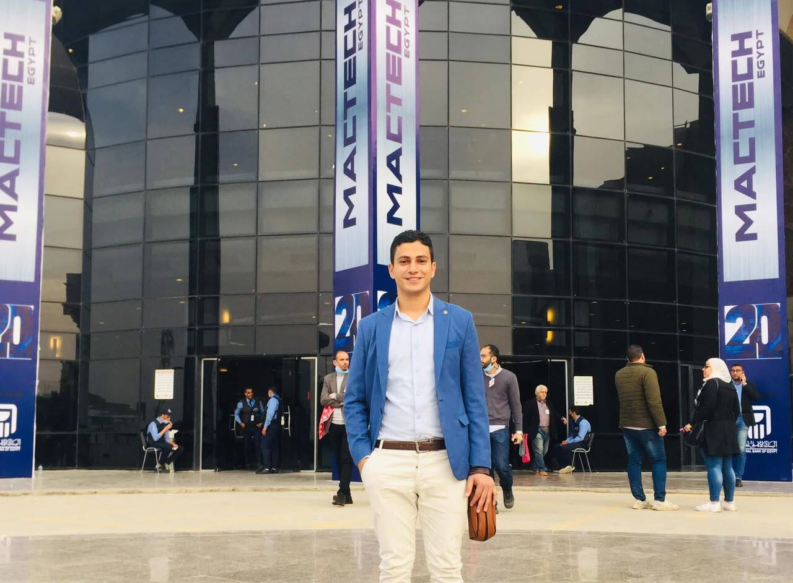

MECHANICAL ENGINEER
ABDLMONEIM NASRLD EIN
Mechanical Engineer
Poultry Processing Equipment Specialist
Project & Technical Engineer
Mechanical Engineer with 6+ years of hands-on experience in poultry slaughterhouse equipment, industrial installations, equipment manufacturing, maintenance, and technical project management.

Professional Summary
Mechanical Engineer with over 6 years of hands-on experience in poultry slaughterhouse equipment, industrial installations, equipment manufacturing, maintenance, and technical project management.
Experienced in the design, installation, commissioning, maintenance, modification, and local manufacturing of poultry processing equipment and production lines, with practical exposure to major international equipment systems including Marel, Linco, Stork, and Meyn.
My experience combines engineering knowledge with strong field experience, allowing me to work effectively across the complete project cycle — from equipment selection and technical evaluation to installation, commissioning, troubleshooting, local fabrication, and client support.
Core Expertise
Poultry Slaughterhouse Equipment
Complete and semi-automated systems.
Processing & Evisceration Lines
Line setup, adjustment and support.
Hanging & Conveyor Systems
Overhead and product-handling layouts.
Defeathering Systems
Installation, tuning and repair.
Air Chilling Systems
Chilling equipment and mechanical interfaces.
Installation & Commissioning
From site set-out to first production.
Maintenance & Troubleshooting
Fast diagnosis of mechanical failures.
Modification & Upgrading
Improving existing lines and components.
Local Manufacturing & Reverse Engineering
Local alternatives to imported parts.
Procurement & Supplier Evaluation
Technical review of offers and proposals.
Costing & Material Estimation
Practical cost and material calculations.
Site Supervision & Workforce
Coordinating technicians and installation teams.
Technical Support & Clients
Clear communication before and after delivery.
Line Layout & Equipment Selection
Matched to capacity and process needs.
Spare Parts Identification & Supply
Correct parts, sourced or made locally.
Experience
-
Mechanical Engineer / Project & Technical Consultant
Poultry Processing & Industrial Projects
Responsible for technical supervision and engineering support for poultry slaughterhouse construction and equipment projects.
- Supervising mechanical equipment installation and site activities.
- Reviewing equipment specifications and technical requirements.
- Selecting suitable equipment according to production capacity and process requirements.
- Preparing general equipment and production-line layouts.
- Coordinating manpower and installation activities.
- Reviewing supplier offers and technical proposals.
- Approving equipment and material supplies from a technical perspective.
- Supporting clients during installation, commissioning, and troubleshooting.
- Providing technical solutions for equipment failures and production problems.
-
Founder / Technical & Sales Manager
Al-Nasr for Poultry Equipment
Established and developed a specialized business focused on manufacturing, supplying, maintaining, and supporting poultry slaughterhouse equipment.
- Technical and commercial management.
- Equipment design and local manufacturing.
- Spare parts supply and technical support.
- Customer technical consultation.
- Cost estimation and quotation preparation.
- Supplier communication and procurement.
- Equipment inspection and troubleshooting.
- Development of locally manufactured alternatives to imported components.
-
Workshop Engineer / Workshop Manager
Poultry Slaughterhouse Equipment Industry
- Manufacturing supervision.
- Technician guidance and workforce coordination.
- Equipment installation.
- Mechanical modifications and repairs.
- Design assistance.
- Material and cost calculations.
- Purchasing and supplier coordination.
- Direct communication with clients.
Supervised a technical team of approximately 5 technicians and participated in multiple large-scale poultry processing projects.
Selected Project Experience
Experience includes:
- Complete slaughterhouse installations
- Production-line upgrades
- Evisceration equipment
- Defeathering systems
- Air-chilling systems
- Conveyor and hanging systems
- Equipment maintenance and spare parts
- Local manufacturing of replacement components
3,000 – 8,000
Birds / Hour
Projects and equipment experience covering production capacities from approximately 3,000 to 8,000 birds/hour, including complete and semi-automated slaughterhouse systems.
International Equipment Experience
- Marel
- Linco
- Stork
- Meyn
Hands-on experience with equipment and systems associated with major international poultry-processing manufacturers, providing practical understanding of equipment operation, maintenance requirements, spare parts, mechanical interfaces, and production-line integration.
Local Manufacturing & Reverse Engineering
- Field Inspection
- Measurement
- Engineering Analysis
- Material Selection
- Manufacturing
- Testing
- Installation
One of my key areas of expertise is developing local solutions for imported poultry-processing components.
A typical example involved a critical imported component that had failed during operation. After taking measurements and analyzing the original component, I developed a local manufacturing solution that was completed within 4 days, significantly reducing the expected cost and avoiding extended production downtime.
Completed within 4 days
Engineering Approach
Engineering Knowledge + Field Experience + Manufacturing Capability + Cost Awareness
- Engineering Knowledge
- Field Experience
- Manufacturing Capability
- Cost Awareness
My approach is strongly field-oriented, with a focus on practical and reliable engineering solutions.
I aim to combine engineering knowledge, field experience, manufacturing capability, and cost awareness to deliver solutions that are technically suitable, maintainable, and economically practical.
Key Strengths
- Strong practical mechanical engineering background.
- Extensive poultry-processing industry exposure.
- Hands-on installation and troubleshooting experience.
- Ability to understand equipment from both engineering and manufacturing perspectives.
- Experience working directly with clients and suppliers.
- Ability to develop local alternatives to imported components.
- Strong understanding of workshop manufacturing and site execution.
- Experience coordinating technicians and field teams.
- Ability to evaluate technical and commercial aspects of equipment.
Education
B.Sc. in Mechanical Engineering
Zagazig University – Egypt
Graduation: 2019 · Grade: Very Good
Industries
- Poultry Processing
- Food Processing
- Industrial Equipment
- Manufacturing
- Mechanical Maintenance
- Project Execution
Professional Objective
To contribute my practical engineering experience to an international or regional organization working in poultry processing, food-processing equipment, industrial machinery, manufacturing, or mechanical projects, while continuing to develop expertise in advanced processing technologies and international engineering standards.
Contact
ABDLMONEIM NASRLD EIN
Mechanical Engineer | Poultry Processing Equipment Specialist | Project & Technical Engineer
Sharqia, Egypt
Available for engineering projects, technical consulting, equipment support, and industrial opportunities.
Download CV